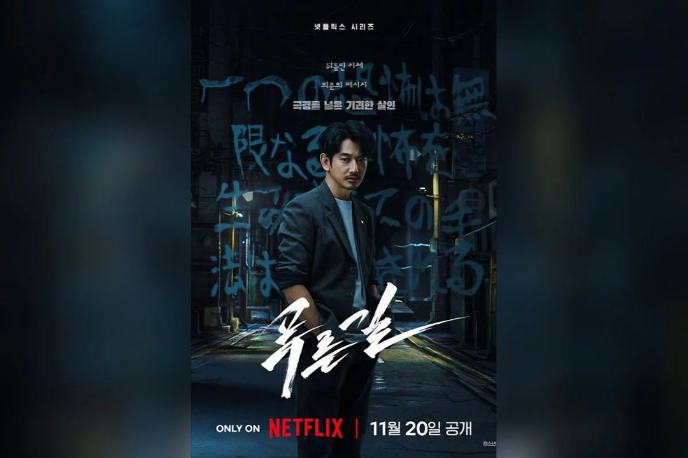
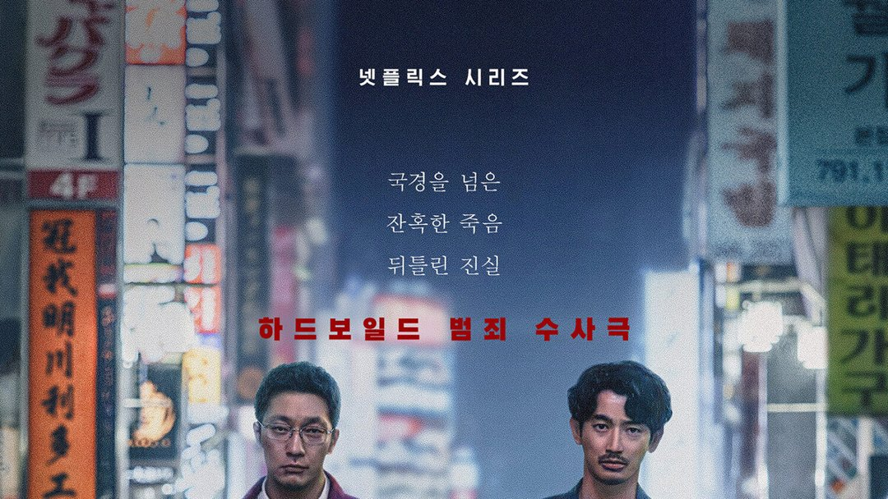
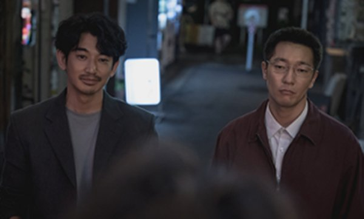
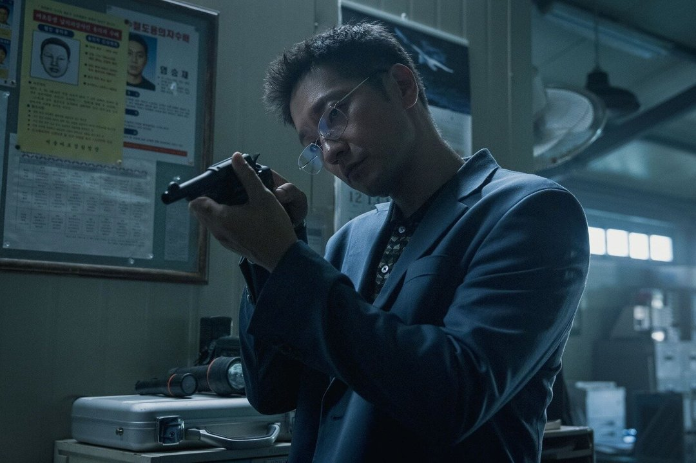
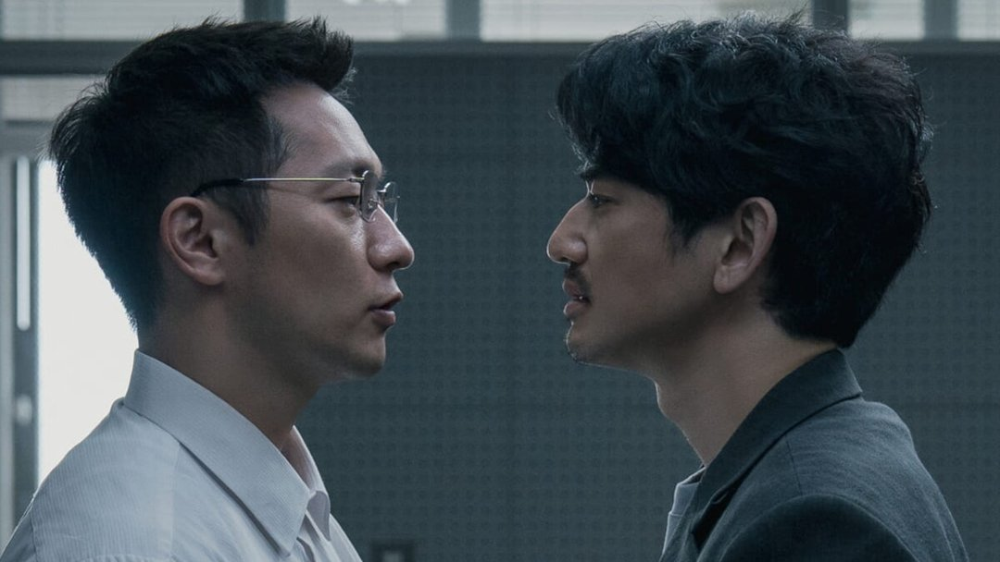
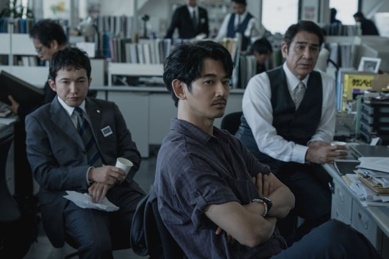
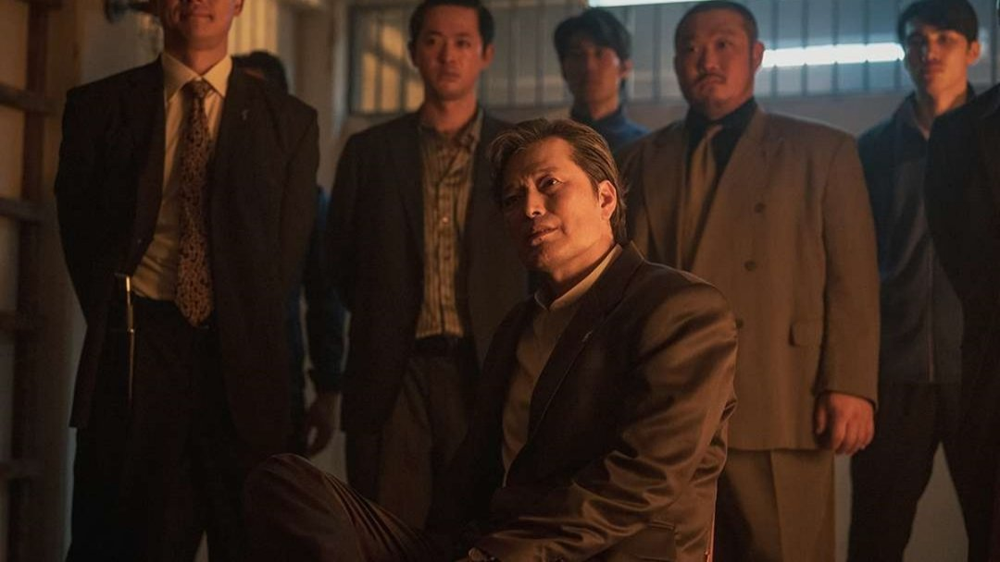

2002년 월드컵으로 들뜬 서울과 도쿄에서 같은 방식의 살인이 일어나요. 한국 형사와 일본 형사가 이 사건을 함께 쫓는 넷플릭스 시리즈 '푸른길'이 공개 하루 만에 한국 1위에 올랐어요. 몇 부작인지, 누가 누구를 맡았는지, 어떤 이야기인지 스포일러 없이 볼게요.
📷 사진 1 자리
▲ 넷플릭스 시리즈 '푸른길' 공식 포스터 · 사진=넷플릭스 제공
몇 부작이고 언제 나왔나
'푸른길'은 11월 20일 오후 5시 넷플릭스에서 8부작 전편이 한꺼번에 공개됐어요. 관람 등급은 19세 이상이에요.
▶ 영상 1 자리
공개 다음 날인 21일에는 넷플릭스 '오늘 대한민국의 TOP 10 시리즈' 1위에 올랐어요.
📷 사진 2 자리
▲ '푸른길' 공식 이미지 · 사진=넷플릭스 제공
누가 누구를 맡았나
| 배우 | 배역 | 누구인가 |
|---|---|---|
| 손석구 | 김석 | 서울경찰청 형사 |
| 나가야마 에이타 | 이노세 히로시 | 도쿄 경시청 형사 |
| 정재영 | 서현태 | 후반부 사건의 중심 인물 |
| 김신록 | 리윤옥 | 극의 무게를 더하는 인물 |
| 사카구치 켄타로 | 에미 슌스케 | 초반 사건의 핵심 인물 |
이 밖에 최성은, 차지연, 손상규 등이 나와요. 연출은 넷플릭스 'D.P.'를 만든 한준희 감독이 맡았어요.
📷 사진 3 자리
▲ '푸른길' 스틸 · 사진=넷플릭스 제공
어떤 이야기인가
서울과 도쿄에서 사지가 뒤틀린 시신이 연달아 발견되고, 현장마다 같은 의문의 문장이 남아 있어요. 김석과 이노세는 두 사건을 같은 범인의 짓으로 보고 국경을 넘어 공조 수사에 나서요.
📷 사진 4 자리
▲ '푸른길' 수사 장면 스틸 · 사진=넷플릭스 제공
두 형사는 수사 방식도 성격도 달라서 처음엔 사사건건 부딪쳐요. 대화도 한국어와 일본어를 섞어서 해요. 이야기는 서울과 도쿄에서 시작해 홍콩과 중앙아시아까지 넓어져요.
▶ 영상 2 자리
📷 사진 5 자리
▲ '푸른길' 스틸 · 사진=넷플릭스 제공
원작은 같은 이름의 한일 합작 만화예요. 두 나라 형사가 양국의 살인사건을 함께 수사한다는 큰 틀은 같아요.
📷 사진 6 자리
▲ '푸른길' 경찰서 장면 스틸 · 사진=넷플릭스 제공
볼 때 알아 두면 좋은 것
초반 회차는 두 형사가 범인을 쫓는 수사극이에요. 회차가 지날수록 사건의 배후를 파고드는 이야기로 넓어지면서 분위기가 달라져요. 한 번에 몰아 보면 흐름을 놓치지 않기 좋아요.
📷 사진 7 자리
▲ '푸른길' 스틸 · 사진=넷플릭스 제공
손석구가 이번엔 2002년이라는 시대에 맞춘 말투와 차림의 형사를 연기해요. 사카구치 켄타로는 그동안 보여 준 부드러운 이미지와 다른 얼굴로 초반 사건을 이끌어요.
▶ 영상 3 자리
8부작을 한꺼번에 공개한 데다 다음 회로 넘어가게 만드는 장면이 많아서, 주말 하루면 끝까지 볼 수 있는 분량이에요. 잔혹한 장면이 있는 19세 이상 작품이라 가족과 함께 보기보다는 혼자 몰아 보는 쪽이 맞아요.
넷플릭스 '푸른길'은 11월 20일 공개된 8부작 19세 이상 시리즈로, 지금 넷플릭스에서 전편을 볼 수 있어요.






